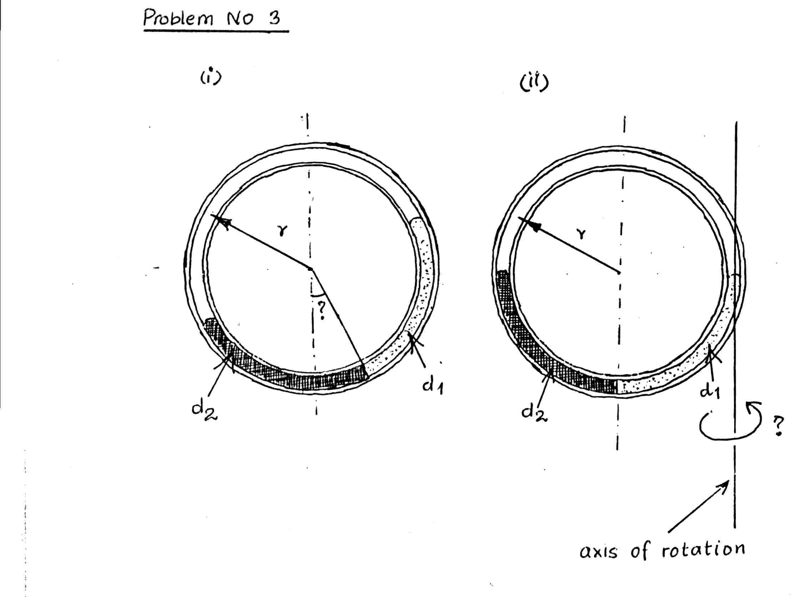

Saved Word worksheet · read-only HTML
Seven Problems · worksheet 07
Calendar and physics readings · Compare the saved website version
Preserved worksheet text
(Serial No: 07)
Seven Problems for the Week
Problem No 1
----------------
A solid right cone of height h and made of material of density d2 floats on a liquid of density d3 contained in a large container with its apex down. Height of the cone lying below the surface of the liquid is (2/3)^1/3 h. Another liquid of density d1 is poured into the container such that the cone submerges completely. Height of the cone lying below the surface of the former liquid is now (1/2)^1/3 h. Show that
d1: d2 : d3 :: 1 : 2 : 3
Assume above liquids to be immiscible.
Problem No 2
----------------
A rod having uniform area of cross-section and its mass uniformly distributed is held vertically above large pool of liquid of such that its bottom most point just touches the liquid surface. When released the entire rod just dips into the liquid before bouncing back upwards.
(i) Find ratio of densities of the rod and the liquid.
(ii) If the length of the rod and acceleration due to gravity are given as L and g, find out how long the since the time of release the entire rod takes the dip.
Problem No 3
----------------
(Refer diagram) A tube of small cross-section is bent into circle. Equal volumes of two immiscible liquids of densities d1 and d2 (d1>d2) occupy half the tube.
(i) Find out angle a point of common surface will make with the vertical.
(ii) If the radius of the circle and acceleration due to gravity are given as r and g, find out angular speed by which it must be rotated about a vertical axis which is tangential to the circle so that the common surface lies just below the centre (the axis is so chosen that the lighter liquid is nearer than the heavier liquid from it).
Problem No 4
----------------
The tube-liquids system described in Problem No 3 is kept in car moving on a circular path of radius R. The system is held in the vertical plane which moves with the car and is always perpendicular to the direction of the motion. The lighter liquid is towards the centre of the circular path. For what speed of the car the common surface will just be below the centre of the system? Assume radius of the system to be negligible as compared to the radius of the circular path and take the gravitational acceleration as g.
Problem No 5
----------------
One end of a uniform rod of length L and density d1 is hinged at the bottom of a large container and the rod can have free movement in a vertical plane. Find the maximum height the container is required to be filled upto with the liquid of density d2 such that the rod stays vertical and is stable.
Problem No 6
----------------
A mark has been put on a spring (weight w, spring constant k) at the middle of the length when it is in relaxed state. It is suspended vertically from one end and partially immersed in a liquid (density d) such that the mark just lies on the liquid surface. The difference in elongations suffered by upper and lower halves is de. What is the density of the material the spring is made of?
Problem No 7
----------------
A top open cylindrical thank of height H (axis vertical) having two identical holes on its vertical wall is filled upto the top with some liquid. After a certain time the level falls to a height where one of the holes is located. If same amount of time is further needed to completely empty the tank, find out the heights from the bottom the holes are located at.
Answers:
No answer
(i) 1:2
Pi/sqrt(2) x sqrt(L/g)
(i)arctan((d2-d1) / (d2+d1))
(ii)sqrt( 2g/r x (d2-d1)/(3d2-d1) )
sqrt( gR x (d2-d1)/(d2+d1) )
5) sqrt(d1/d2) x L
6) wd / (2w - 8kde)
7) 0.132H and very close to the bottom
Related saved website diagram
This original JPEG is linked from sevenp7.htm beside the same circular-tube problem. It was already preserved in the website collection and is reused here. It is not an image extracted from the Word file.

Source notes
MyCommunity/nandighosha.org.zip!/Jee/Physics/sevenp7.doc
Converted locally to text and HTML, with superscripts and subscripts retained where present. Page images were reviewed as a conversion check. The HTML is a new reading layout, not a facsimile. Automatic list numbering and Word pagination are not reconstructed. Answers remain in extracted paragraph order and have not been checked or corrected mathematically. The original documents and approved articles are unchanged.
A separate PDF rendering displayed the density comparison sign poorly. This HTML retains the extracted literal d1>d2. The PDF rendering is not used as the reading edition.